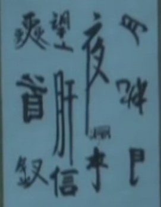

根据图中提示猜4句诗
猜对奖励鲜花5朵，截止日期2011年10月14日20:00
［此帖子已被 蓝天蓝 在 2011-10-13 15:46:07 编辑过］
引用：不对滴
原文由 梧桐风 发表于 2011-10-13 17:44:05 :
举头望明月，低头思故乡
引用：是猜4句诗
原文由 闫荣辉 发表于 2011-10-13 17:58:36 :
中夜起望西园值月上
我再发一遍
斜月倒枕门半开，夜长漏短无人来。 望断肝肠无点信，三更回首折金钗。
百度很好用嘛
［ 梧桐风 于 2011-10-15 0:33:31 时花20金币送鲜花一朵］
［ 蓝天蓝 于 2011-10-15 16:13:11 时花20金币送鲜花一朵］
［ 蓝天蓝 于 2011-10-15 16:13:21 时花20金币送鲜花一朵］
［ 蓝天蓝 于 2011-10-15 16:13:54 时花20金币送鲜花一朵］
［ 蓝天蓝 于 2011-10-15 16:13:58 时花20金币送鲜花一朵］
［ 蓝天蓝 于 2011-10-15 16:14:27 时花20金币送鲜花一朵］
引用：
原文由 魔铃 发表于 2011-10-14 23:25:46 :斜月倒枕门半开，夜长漏短无人来。 望断肝肠无点信，三更回首折金钗。
百度很好用嘛
［ 梧桐风 于 2011-10-15 0:33:31 时花20金币送鲜花一朵］
［ 蓝天蓝 于 2011-10-15 16:13:11 时花20金币送鲜花一朵］
［ 蓝天蓝 于 2011-10-15 16:13:21 时花20金币送鲜花一朵］
［ 蓝天蓝 于 2011-10-15 16:13:54 时花20金币送鲜花一朵］
［ 蓝天蓝 于 2011-10-15 16:13:58 时花20金币送鲜花一朵］
［ 蓝天蓝 于 2011-10-15 16:14:27 时花20金币送鲜花一朵］
虽说是百度的，虽然不是在规定的时间内猜到的，也奖励5朵鲜花